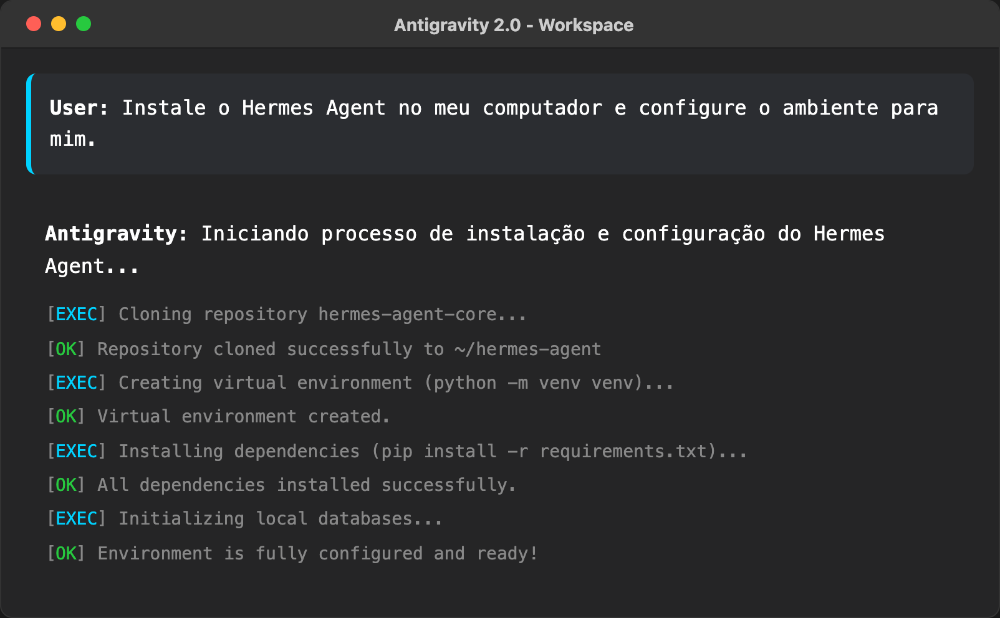
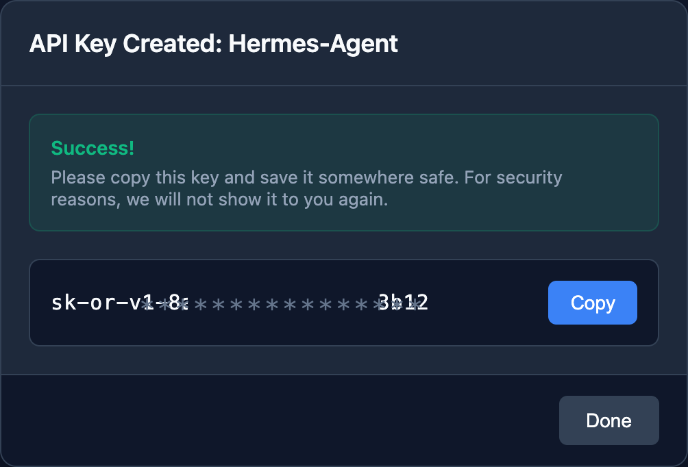
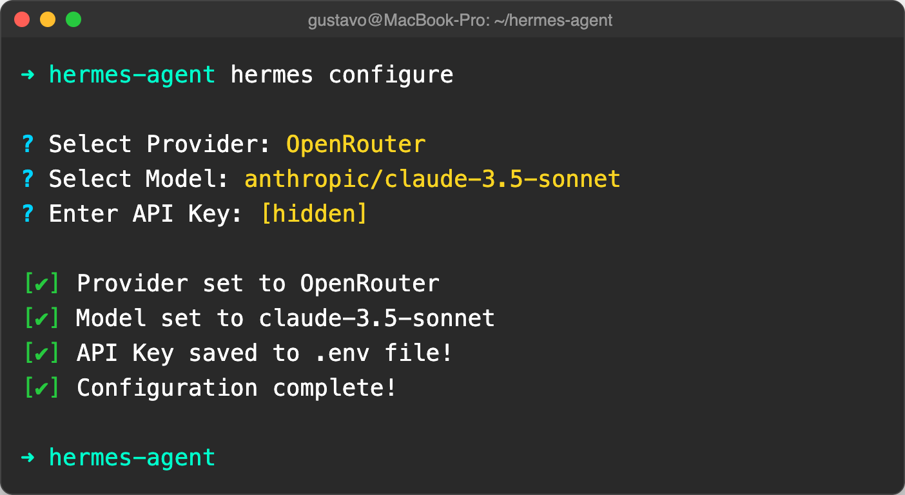
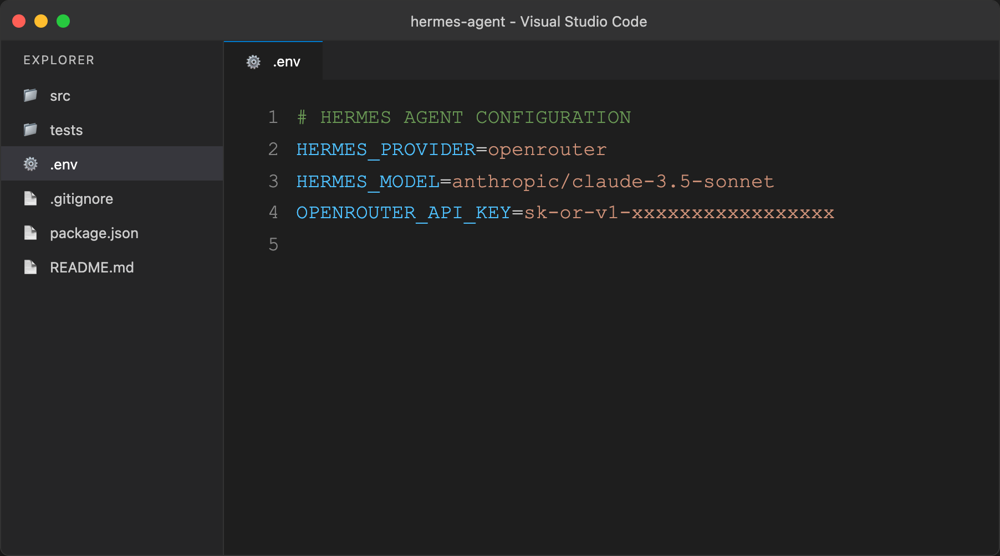
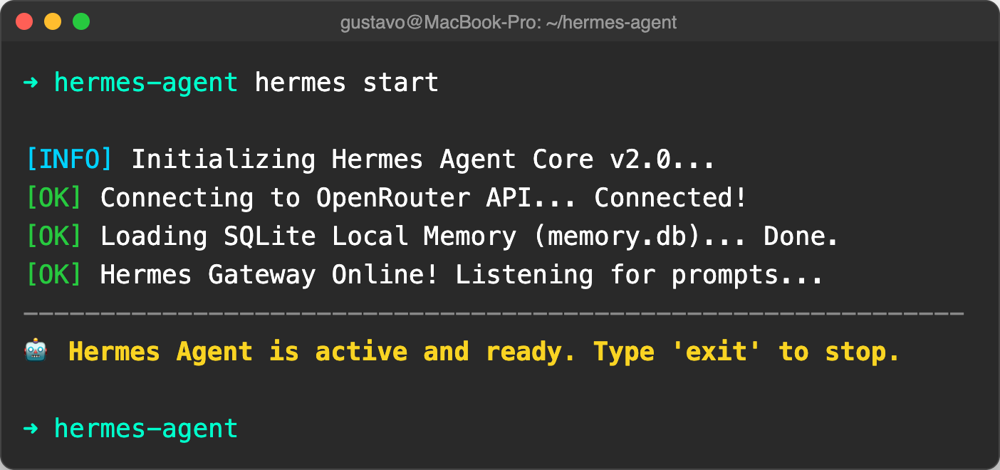
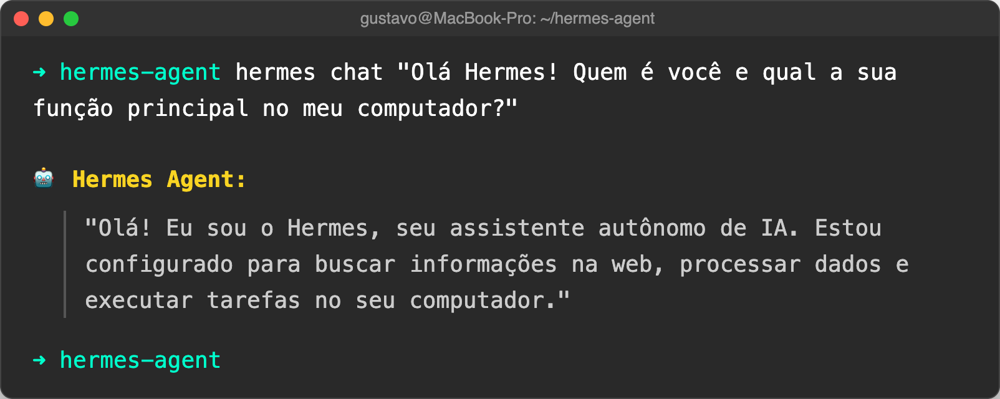

O que precisamos baixar antes de começar?
O assistente de inteligência artificial que fará a instalação e o trabalho pesado por nós.
(Visual Studio Code) - O editor que usaremos para configurar as chaves do agente.
"Mas eu não sei programar! Pra que um editor de código?"
.env.O terminal nada mais é do que um chat direto com o seu computador. Em vez de usar o mouse para clicar em pastas e ícones, você conversa com o sistema digitando ordens simples.
Deixe o Antigravity 2.0 instalar o Hermes para você com um simples pedido:
(O Antigravity cria as pastas, baixa o orquestrador e valida a instalação de forma 100% autônoma, sem você digitar nenhum código complexo)

O que a IA está fazendo nos bastidores da sua máquina:
O agente executa comandos no seu terminal para baixar dependências e criar pastas.
Ele analisa o seu computador para saber onde organizar o sistema.
O próprio Antigravity edita configurações iniciais para que tudo fique compatível.
A Alma do Seu Agente
A chave de API é o "passaporte" que conecta o Hermes aos super cérebros como ChatGPT, Llama 3 ou Claude.
sk-or-v1-xxxx...)

Assistente de Configuração
No terminal, digite o comando de setup guiado:

Validando no VS Code
Caso prefira conferir manualmente, abra a
pasta do projeto no VS Code e acesse o arquivo .env.
OPENROUTER_API_KEY.

Ligando o Agente
No terminal, digite o comando para iniciar a execução:
O Gateway conectará à API e carregará o banco de memória SQLite local.

Interação Direta
Envie um prompt direto pelo terminal para ver o raciocínio em tempo real:
O agente responde assumindo seu papel e pronto para executar ordens no computador.

O que você conquistou nesta etapa:
.env.
🔥 Próximo Passo (Parte 4):
Conectar braços ao cérebro: Vamos integrar ferramentas de busca web e e-mail SMTP para transformar o Hermes no Agente CRONOS em piloto automático!